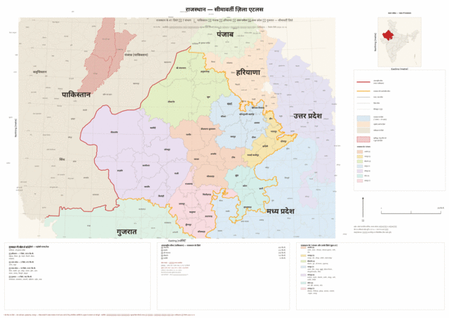
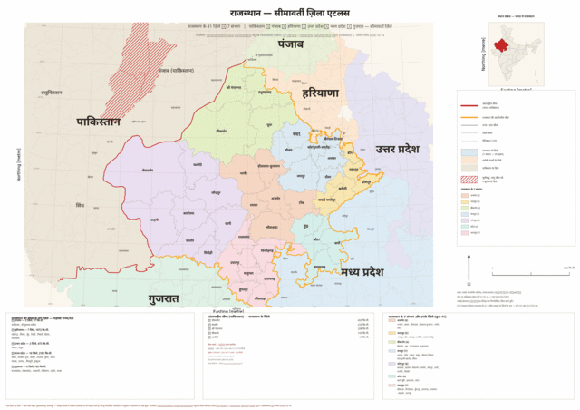
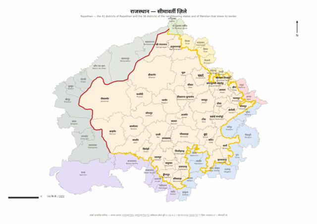
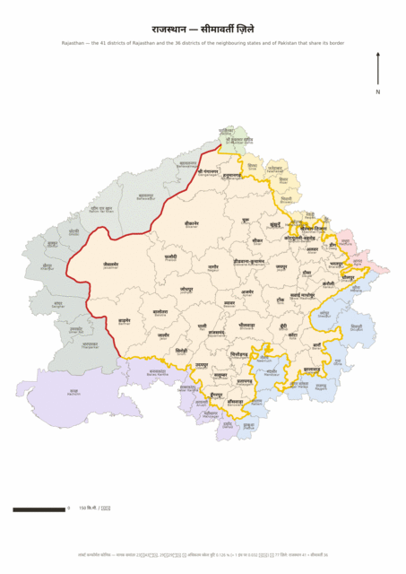
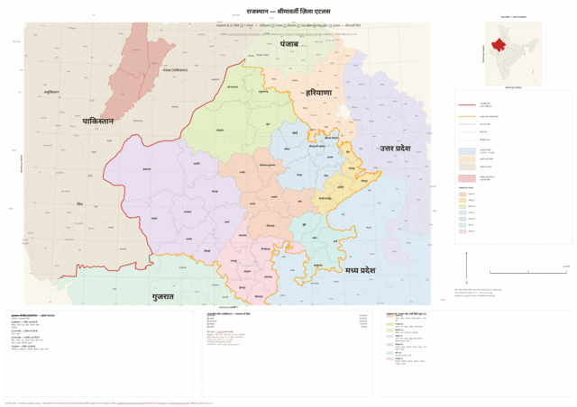

🗺️ Rajasthan
राजस्थान — Rajasthan ke maps — border district atlas, A1 se A4 print size.
Rajasthan Geography · 23 files · AVIF / PDF / PNG
Rajasthan map — mobile preview
A4 · PDFMap seedha dekhein — mobile par PDF plugin ki zaroorat nahi. Map kholo se zoom aur swipe karke padhein.

Print ke liye PDF; phone par padhne ke liye zoomable map. Badi file ke liye stable internet rakhein.
Subfolders
Files
17 files-
Rajasthan Border District Map A4 (1)
Rajasthan Border District Map A4 (1)
Rajasthan Border District Map A4 (1) — Rajasthan Geography · Rajasthan folder ka PDF study material, file ke naam se bana label. Online preview dekho ya poori file free me download karo.
Rajasthan Border District Map A4 (1) — राजस्थान भूगोल · Rajasthan फ़ोल्डर का PDF स्टडी मटेरियल, फ़ाइल के नाम से बना लेबल। ऑनलाइन प्रीव्यू देखें या पूरी फ़ाइल मुफ़्त में डाउनलोड करें।
-
Rajasthan Border District Map A4
Rajasthan Border District Map A4
Rajasthan Border District Map A4 — Rajasthan Geography · Rajasthan folder ka PDF study material, file ke naam se bana label. Online preview dekho ya poori file free me download karo.
Rajasthan Border District Map A4 — राजस्थान भूगोल · Rajasthan फ़ोल्डर का PDF स्टडी मटेरियल, फ़ाइल के नाम से बना लेबल। ऑनलाइन प्रीव्यू देखें या पूरी फ़ाइल मुफ़्त में डाउनलोड करें।
-
Rajasthan Border District Map A4 Landscape (1) (1)
Rajasthan Border District Map A4 Landscape (1) (1)
Rajasthan Border District Map A4 Landscape (1) (1) — Rajasthan Geography · Rajasthan folder ka PDF study material, file ke naam se bana label. Online preview dekho ya poori file free me download karo.
Rajasthan Border District Map A4 Landscape (1) (1) — राजस्थान भूगोल · Rajasthan फ़ोल्डर का PDF स्टडी मटेरियल, फ़ाइल के नाम से बना लेबल। ऑनलाइन प्रीव्यू देखें या पूरी फ़ाइल मुफ़्त में डाउनलोड करें।
-
Rajasthan Border District Map A4 Landscape (1)
Rajasthan Border District Map A4 Landscape (1)
Rajasthan Border District Map A4 Landscape (1) — Rajasthan Geography · Rajasthan folder ka PDF study material, file ke naam se bana label. Online preview dekho ya poori file free me download karo.
Rajasthan Border District Map A4 Landscape (1) — राजस्थान भूगोल · Rajasthan फ़ोल्डर का PDF स्टडी मटेरियल, फ़ाइल के नाम से बना लेबल। ऑनलाइन प्रीव्यू देखें या पूरी फ़ाइल मुफ़्त में डाउनलोड करें।
-
Rajasthan Border District Map A4 Landscape (2)
Rajasthan Border District Map A4 Landscape (2)
Rajasthan Border District Map A4 Landscape (2) — Rajasthan Geography · Rajasthan folder ka PDF study material, file ke naam se bana label. Online preview dekho ya poori file free me download karo.
Rajasthan Border District Map A4 Landscape (2) — राजस्थान भूगोल · Rajasthan फ़ोल्डर का PDF स्टडी मटेरियल, फ़ाइल के नाम से बना लेबल। ऑनलाइन प्रीव्यू देखें या पूरी फ़ाइल मुफ़्त में डाउनलोड करें।
-
Rajasthan Border District Map A4 Landscape (3)
Rajasthan Border District Map A4 Landscape (3)
Rajasthan Border District Map A4 Landscape (3) — Rajasthan Geography · Rajasthan folder ka PDF study material, file ke naam se bana label. Online preview dekho ya poori file free me download karo.
Rajasthan Border District Map A4 Landscape (3) — राजस्थान भूगोल · Rajasthan फ़ोल्डर का PDF स्टडी मटेरियल, फ़ाइल के नाम से बना लेबल। ऑनलाइन प्रीव्यू देखें या पूरी फ़ाइल मुफ़्त में डाउनलोड करें।
-
Rajasthan Border District Map A4 Landscape
Rajasthan Border District Map A4 Landscape
Rajasthan Border District Map A4 Landscape — Rajasthan Geography · Rajasthan folder ka PDF study material, file ke naam se bana label. Online preview dekho ya poori file free me download karo.
Rajasthan Border District Map A4 Landscape — राजस्थान भूगोल · Rajasthan फ़ोल्डर का PDF स्टडी मटेरियल, फ़ाइल के नाम से बना लेबल। ऑनलाइन प्रीव्यू देखें या पूरी फ़ाइल मुफ़्त में डाउनलोड करें।
-
Rajasthan Border District Map A4 Portrait
Rajasthan Border District Map A4 Portrait
Rajasthan Border District Map A4 Portrait — Rajasthan Geography · Rajasthan folder ka PDF study material, file ke naam se bana label. Online preview dekho ya poori file free me download karo.
Rajasthan Border District Map A4 Portrait — राजस्थान भूगोल · Rajasthan फ़ोल्डर का PDF स्टडी मटेरियल, फ़ाइल के नाम से बना लेबल। ऑनलाइन प्रीव्यू देखें या पूरी फ़ाइल मुफ़्त में डाउनलोड करें।
-
Rajasthan Border District Map A4 Portrait EkGuru
Rajasthan Border District Map A4 Portrait EkGuru
Rajasthan Border District Map A4 Portrait EkGuru — Rajasthan Geography · Rajasthan folder ka PDF study material, file ke naam se bana label. Online preview dekho ya poori file free me download karo.
Rajasthan Border District Map A4 Portrait EkGuru — राजस्थान भूगोल · Rajasthan फ़ोल्डर का PDF स्टडी मटेरियल, फ़ाइल के नाम से बना लेबल। ऑनलाइन प्रीव्यू देखें या पूरी फ़ाइल मुफ़्त में डाउनलोड करें।
-
Poora dekho
Border district atlas — A1 poster
सीमावर्ती जिला एटलस — A1 पोस्टर
Largest print size (594 × 841 mm). Best for wall charts.
Rajasthan border district atlas (A1 poster, 594 × 841 mm). The detailed wall-chart sheet: all 41 districts of Rajasthan and the 36 border-sharing districts of Pakistan and the five neighbouring states, a division-wise legend of the districts, an inset locator map of India, and the printed tables — district-wise international border lengths with Pakistan (Barmer 459 km, Bikaner 232 km, Sri Ganganagar 208 km, Jaisalmer 143 km, Phalodi 19 km) and the interstate border lengths for Punjab, Haryana, Uttar Pradesh, Madhya Pradesh and Gujarat. Meant for classroom walls and deep revision.
राजस्थान सीमावर्ती जिला एटलस (A1 पोस्टर, 594 × 841 मिमी)। विस्तृत वॉल-चार्ट शीट: राजस्थान के सभी 41 जिले और पाकिस्तान तथा पाँच पड़ोसी राज्यों के 36 सीमावर्ती जिले, मंडल-वार जिला लेजेंड, भारत के भीतर स्थिति दिखाने वाला inset नक्शा, और छपी हुई तालिकाएँ — पाकिस्तान से लगती अंतर्राष्ट्रीय सीमा की जिला-वार लंबाई (बाड़मेर 459 कि.मी., बीकानेर 232 कि.मी., श्रीगंगानगर 208 कि.मी., जैसलमेर 143 कि.मी., फलौदी 19 कि.मी.) तथा पंजाब, हरियाणा, उत्तर प्रदेश, मध्य प्रदेश व गुजरात से लगती सीमा की लंबाई। क्लासरूम की दीवार और गहरे रिवीजन के लिए।
-

Poora dekhoBorder district atlas — A2
सीमावर्ती जिला एटलस — A2
Large print size (420 × 594 mm).
Rajasthan border district atlas (A2 print, 420 × 594 mm). Same detailed atlas as the A1 poster at half the size: 41 Rajasthan districts, the 36 border-sharing districts of Pakistan, Punjab, Haryana, Uttar Pradesh, Madhya Pradesh and Gujarat, a division-wise district legend, the India inset and the border-length tables. Good for a study-room wall where a full poster is too big.
राजस्थान सीमावर्ती जिला एटलस (A2 प्रिंट, 420 × 594 मिमी)। A1 पोस्टर का ही विस्तृत एटलस, आधे आकार में: राजस्थान के 41 जिले, पाकिस्तान, पंजाब, हरियाणा, उत्तर प्रदेश, मध्य प्रदेश व गुजरात के 36 सीमावर्ती जिले, मंडल-वार जिला लेजेंड, भारत inset और सीमा-लंबाई की तालिकाएँ। ऐसे स्टडी-रूम के लिए जहाँ पूरा पोस्टर बड़ा पड़ता है।
-

Poora dekhoBorder district atlas — A3
सीमावर्ती जिला एटलस — A3
Medium print size (297 × 420 mm).
Rajasthan border district atlas (A3 print, 297 × 420 mm). The detailed atlas on a desk-size sheet: all 41 districts of Rajasthan, the 36 neighbouring border districts of Pakistan and the five bordering states, division-wise legend, India inset and the district-wise border-length tables. Handy for coaching folders and group study.
राजस्थान सीमावर्ती जिला एटलस (A3 प्रिंट, 297 × 420 मिमी)। डेस्क-साइज़ शीट पर विस्तृत एटलस: राजस्थान के सभी 41 जिले, पाकिस्तान और पाँच पड़ोसी राज्यों के 36 सीमावर्ती जिले, मंडल-वार लेजेंड, भारत inset और जिला-वार सीमा-लंबाई तालिकाएँ। कोचिंग फाइल और ग्रुप स्टडी के लिए उपयुक्त।
-

Poora dekhoBorder districts — A4 landscape
सीमावर्ती जिले — A4 लैंडस्केप
Page size (297 × 210 mm), landscape.
Rajasthan — border districts (A4 landscape, 297 × 210 mm). The wide version of the same sheet: all 41 districts of Rajasthan and the 36 districts of Pakistan, Punjab, Haryana, Uttar Pradesh, Madhya Pradesh and Gujarat that share its border, laid out horizontally so the long international border reads without turning the page. Pakistan's bordering districts (Bahawalnagar, Bahawalpur, Rahim Yar Khan, Ghotki, Khairpur, Sanghar, Sukkur, Tharparkar, Umer Kot) and Rajasthan's own border belt — Barmer, Bikaner, Sri Ganganagar, Jaisalmer, Phalodi — sit along the top edge. Hindi labels, colour-coded state boundaries, north arrow and a 0–150 km scale bar; sized for a normal A4 printer and useful for RPSC, REET, Police, SI and Patwari revision.
राजस्थान — सीमावर्ती जिले (A4 लैंडस्केप, 297 × 210 मिमी)। इसी शीट का चौड़ा (horizontal) रूप — राजस्थान के सभी 41 जिले और पाकिस्तान, पंजाब, हरियाणा, उत्तर प्रदेश, मध्य प्रदेश व गुजरात के सीमा साझा करने वाले 36 जिले। लंबी अंतर्राष्ट्रीय सीमा एक ही दिशा में पढ़ी जा सके, इसलिए यह लेआउट नोटबुक और फाइल में लगाने के लिए बेहतर है। पाकिस्तान से लगने वाले राजस्थान के जिले — बाड़मेर, बीकानेर, श्रीगंगानगर, जैसलमेर और फलौदी — ऊपरी सीमा के साथ दिखते हैं; पाकिस्तानी जिले (बहावलनगर, बहावलपुर, रहीम यार ख़ान, घोटकी, ख़ैरपुर, सांघर, सुक्कुर, थारपारकर, उमरकोट) भी नाम सहित अंकित हैं। हिंदी लेबल, रंगों में राज्य-सीमाएँ, उत्तर तीर और 0–150 कि.मी. स्केल बार — RPSC, REET, पुलिस, SI और पटवारी की तैयारी के लिए प्रिंट-ready।
-

Poora dekhoBorder districts — A4 portrait
सीमावर्ती जिले — A4 पोर्ट्रेट
Page size (210 × 297 mm), portrait.
Rajasthan — border districts (A4 portrait, 210 × 297 mm). One printable sheet shows all 41 districts of Rajasthan together with the 36 districts that share its border: Pakistan (Bahawalnagar, Bahawalpur, Rahim Yar Khan in Punjab province; Ghotki, Khairpur, Sanghar, Sukkur, Tharparkar, Umer Kot in Sindh) plus the bordering districts of Punjab, Haryana, Uttar Pradesh, Madhya Pradesh and Gujarat. Districts of Rajasthan that touch Pakistan — Barmer, Bikaner, Sri Ganganagar, Jaisalmer and Phalodi — are the ones drawn along the international border. State boundaries are colour-coded, every name is in Hindi, and the sheet carries a north arrow and a 0–150 km scale bar. Designed for RPSC, REET, Rajasthan Police, SI and Patwari exam preparation — print it straight on A4.
राजस्थान — सीमावर्ती जिले (A4 पोर्ट्रेट, 210 × 297 मिमी)। एक ही शीट पर राजस्थान के सभी 41 जिले और सीमा साझा करने वाले 36 पड़ोसी जिले — पाकिस्तान (पंजाब प्रांत: बहावलनगर, बहावलपुर, रहीम यार ख़ान; सिंध: घोटकी, ख़ैरपुर, सांघर, सुक्कुर, थारपारकर, उमरकोट) तथा पंजाब, हरियाणा, उत्तर प्रदेश, मध्य प्रदेश और गुजरात के सीमावर्ती जिले। पाकिस्तान से लगने वाले राजस्थान के जिले — बाड़मेर, बीकानेर, श्रीगंगानगर, जैसलमेर और फलौदी — अंतर्राष्ट्रीय सीमा के साथ दिखाए गए हैं। राज्यों की सीमाएँ रंगों से अलग, हर नाम हिंदी में, उत्तर दिशा तीर और 0–150 कि.मी. स्केल बार सहित। RPSC, REET, राजस्थान पुलिस, SI और पटवारी परीक्षा की तैयारी के लिए सीधे A4 पर प्रिंट करने योग्य शीट।
-

Poora dekhoBorder district atlas — preview image
सीमावर्ती जिला एटलस — प्रीव्यू इमेज
Quick look before downloading a print size.
Preview image of the Rajasthan border district atlas — the whole layout (41 Rajasthan districts, 36 border-sharing districts of Pakistan and the neighbouring states, legend and tables) in one screen, so you can check the sheet before downloading a print size.
राजस्थान सीमावर्ती जिला एटलस की प्रीव्यू इमेज — पूरा लेआउट (41 जिले, पाकिस्तान व पड़ोसी राज्यों के 36 सीमावर्ती जिले, लेजेंड और तालिकाएँ) एक स्क्रीन पर, जिससे प्रिंट साइज़ डाउनलोड करने से पहले देखा जा सके।
-
Border district atlas — A3 print (PDF)
सीमावर्ती जिला एटलस — A3 प्रिंट (PDF)
A3 size ka print-ready PDF — poster jaisa bada naksha.
Border district atlas — A3 print (PDF) — Rajasthan Geography · Rajasthan folder ka PDF study material, file ke naam se bana label. Online preview dekho ya poori file free me download karo.
सीमावर्ती जिला एटलस — A3 प्रिंट (PDF) — राजस्थान भूगोल · Rajasthan फ़ोल्डर का PDF स्टडी मटेरियल, फ़ाइल के नाम से बना लेबल। ऑनलाइन प्रीव्यू देखें या पूरी फ़ाइल मुफ़्त में डाउनलोड करें।
-
Border districts — A4 portrait print (PDF)
सीमावर्ती जिले — A4 पोर्ट्रेट प्रिंट (PDF)
A4 portrait ka PDF — seedha printer par lagao.
Border districts — A4 portrait print (PDF) — Rajasthan Geography · Rajasthan folder ka PDF study material, file ke naam se bana label. Online preview dekho ya poori file free me download karo.
सीमावर्ती जिले — A4 पोर्ट्रेट प्रिंट (PDF) — राजस्थान भूगोल · Rajasthan फ़ोल्डर का PDF स्टडी मटेरियल, फ़ाइल के नाम से बना लेबल। ऑनलाइन प्रीव्यू देखें या पूरी फ़ाइल मुफ़्त में डाउनलोड करें।